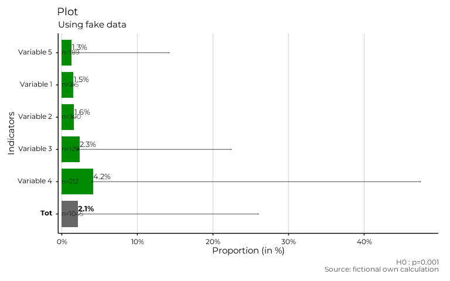

Function to construct a graphic following the aestetics of the other functions of functionr from a table. This function was created to align results generated outside fonctionr with the outputs of fonctionr.
Usage
esth_graph(
tab,
var,
value,
error_low = NULL,
error_upp = NULL,
facet = NULL,
n_var = NULL,
pvalue = NULL,
reorder = FALSE,
show_value = TRUE,
name_total = NULL,
scale = 1,
digits = 2,
unit = "",
dec = ",",
pal = NULL,
col = "indianred4",
dodge = 0.9,
font = "Roboto",
wrap_width_y = 25,
title = NULL,
subtitle = NULL,
xlab = NULL,
ylab = NULL,
caption = NULL,
theme = "fonctionr",
coef_font = 1
)Arguments
- tab
dataframe with the indicators to be ploted.
- var
The variable in
tabwith the labels of the indicator to be ploted.- value
The variable in
tabwith the values of the indicator to be ploted.- error_low
The variable in
tabwith the lower bound of the confidence interval. If eithererror_loworerror_uppisNULLerror bars are not shown on the graphic.- error_upp
The variable in
tabwith the upper bound of the confidence interval. If eithererror_loworerror_uppisNULLerror bars are not shown on the graphic.- facet
A variable in
tabdefining the faceting group, if applicable. Default isNULL.- n_var
The variable in
tabcontaining the number of observations for each indicator ploted. Default (NULL) does not show the numbers of observations on the plot.- pvalue
The p-value to show in the caption. It can be a numeric value or the pvalue object from a statistical test.
- reorder
TRUEif you want to reordervaraccording to value.FALSEif you do not want to reorder.NAand total labels invarare not included in the reorder. Default isFALSE.- show_value
TRUEif you want to show the values on the graphic.FALSEif you do not want to show them. Default isTRUE.- name_total
Name of the
varlabel that may contain the total. When indicated, it is displayed separately (bold name and value color is'grey40') on the graph.- scale
Denominator of the indicator. Default is
1to not modify indicators.- digits
Number of decimal places displayed on the values labels on the graphic. Default is
0.- unit
The unit displayed on the grphaic. Default is no unit (
"").- dec
Decimal mark shown on the graphic. Default is
",".- pal
For compatibility with old versions.
- col
Color of the bars.
colmust be a R color or an hexadecimal color code. Default is"indianred4". The color ofNAand total are always"grey"and"grey40".- dodge
Width of the bars. Default is
0.9to let a small space between bars. A value of1leads to no space betweens bars. Values higher than1are not advised because they cause an overlaping of the bars.- font
Font used in the graphic. See
load_and_active_fonts()for available fonts. Default is"Roboto".- wrap_width_y
Number of characters before going to the line for the labels of
varDefault is25.- title
Title of the graphic.
- subtitle
Subtitle of the graphic.
- xlab
X label on the graphic. As
ggplot2::coord_flip()is used in the graphic,xlabrefers to the x label on the graphic, after theggplot2::coord_flip(), and not to var intab.- ylab
Y label on the graphic. As
ggplot2::coord_flip()is used in the graphic,ylabrefers to the y label on the graphic, after theggplot2::coord_flip(), and not to value intab.- caption
Caption of the graphic.
- theme
Theme of the graphic. Default is
"fonctionr"."IWEPS"adds y axis lines and ticks.NULLuses the default grey ggplot2 theme.- coef_font
A multiplier factor for font size of all fonts on the graphic. Default is
1. Usefull when exporting the graphic for a publication (e.g. in a Quarto document).
Examples
# Making fictional dataframe
data_test <- data.frame(
Indicators = c(
"Variable 1",
"Variable 2",
"Variable 3",
"Variable 4",
"Variable 5",
"Tot"
),
Estimates = c(1.52, 1.63, 2.34, 4.15, 1.32, 2.13),
IC_low = c(1.32, 1.4, 1.98, 4, 14.2, 26),
IC_upp = c(1.73, 1.81, 22.4, 47.44, 1.45, 2.34),
sample_size = c(215, 300, 129, 212, 189, 1045)
)
# Using dataframe to make a plot
plot_test <- esth_graph(data_test,
var = Indicators,
value = Estimates,
error_low = IC_low,
error_upp = IC_upp,
n_var = sample_size,
pvalue = .001,
reorder = TRUE,
show_value = TRUE,
name_total = "Tot",
scale = 1,
digits = 1,
unit = "%",
dec = ".",
col = "green4",
dodge = 0.8,
font = "Montserrat",
wrap_width_y = 25,
title = "Plot",
subtitle = "Using fake data",
xlab = "Proportion (in %)",
ylab = "Indicators",
caption = "Source: fictional own calculation",
theme = "IWEPS"
)
# Result is a ggplot
plot_test
#> Warning: Removed 1 row containing missing values or values outside the scale range
#> (`geom_text()`).
#> Warning: Removed 5 rows containing missing values or values outside the scale range
#> (`geom_text()`).
